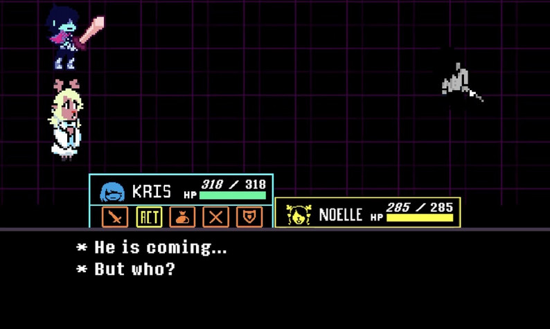

Deltarune Reflections
Your actions now have consequences. I told you. Everything. But, you didn't listen. This is why "Deltarune" is now Reflections!
Featuring:
- An incredible SOUNDTRACK made by N1GHTM4R3 and TheCubicMaster
- A redesigned STORY wrote entirely by N1GHTM4R3 and AlberoSociale
- New ART and SPRITES made by GameBossKing, TheCubicMaster and Stefano
- CODED by L'Hacker Inesperto and N1GHTM4R3
- MAIN PLAYTESTED by Alf, Francesco Falone and Sorion00
And…
…
…I can't tell this to you. You need to see YOURSELF.
